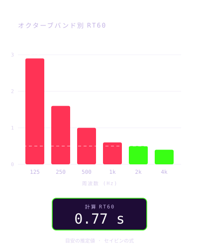
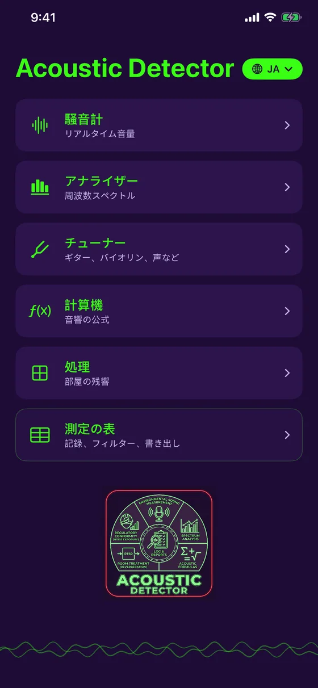

音の測定と音響処理
聴く。分析する。改善する。
Acoustic Detector は、iPhoneを音響ツールに変えます。騒音を測り、スペクトルを分析し、LiDARで部屋をスキャンして、どこで響くのか、どれだけ吸音材を足せばよいのかを調べられます。無料、完全オフライン、7言語対応。

バージョン1.4.1：無料で、より安定して正確なチューナー
Acoustic Detector に、ギター・ウクレレ・バイオリンなどに使える無料のチューナーが加わり、日本語・フランス語・英語・スペイン語・ドイツ語・ポルトガル語・イタリア語に対応しました。
- 無料のチューナー：ギター（5種類のチューニング）、ウクレレ（ローGとバリトンを含む）、バイオリン、ビオラ、チェロ、マンドリン、バンジョー、声のためのクロマチックモード
- バージョン1.4.1：異常な測定値を無視する安定した表示、より正確な針、信号レベルの表示
- 音名は言語に応じてドレミまたはCDEで表示。音が合うと振動でお知らせ
- 7言語をメインメニューから選択可能
- 125 Hzから4 kHzまでのオクターブバンド別RT60を、目標値と比較
- ノイズマップ：複数の地点で測定してヒートマップを作成
- 二重壁：共振周波数と周波数ごとの遮音性能
- アプリは無料：騒音計、分析、チューナー、測定一覧、PDF書き出しが含まれます。処理と計算ツールは買い切り（1回のみ）で利用可能
バージョン1.4.1 は App Store で配信中です。
あくまで目安として、正直にお伝えします。 iPhoneのマイクは認証された測定器ではありません。表示される値は推定値であり、その旨を明示しています。精度を高めるための手動キャリブレーション（任意）も使えます。Acoustic Detector は、公的な規制への適合確認に使う校正済みの測定器の代わりにはなりません。
Acoustic Detector でできること
測ることも、改善することも、1台で
リアルタイム騒音計
dB値をリアルタイムで表示。最小・平均・最大、マイクのキャリブレーション、色分けされた履歴に対応。
スペクトラム分析
リアルタイムの周波数分析。純音を検出して、周波数・周期・波長を表示。
部屋の音響処理
用途に合わせた目標値と残響時間（RT60）を比較し、追加する吸音材の量を算出。
LiDARスキャン
iPhone Proで部屋を見渡すだけで、寸法と各壁の面積が自動で入力されます。
ノイズマップ
複数の地点でレベルを測り、静かな場所とうるさい場所をヒートマップで確認。
チューナー
ギター、ウクレレ、バイオリン、ビオラ、チェロ、マンドリン、バンジョー、任意の音や声にも対応。針とセントをリアルタイム表示。
計算ツール
音源の合成、音圧、周波数と波長、二重壁の計算。
プレビュー
シンプルで正確、現場ですぐ使える



こんな方に
現場からスタジオまで
施工業者・技術者
現場の騒音を測り、間仕切りを確認し、見積もり前に部屋の音響処理を見積もれます。
スタジオ・音楽家・オーディオ
部屋の残響を計算し、問題のある低音を見つけ、必要な吸音材を見積もり、楽器のチューニングもできます。
自宅・オフィス
ホームシアター、在宅オフィス、会議室：どこで響くのか、どう対処すればよいかがわかります。
料金
無料。買い切りは任意です
無料
- リアルタイム騒音計とキャリブレーション
- スペクトラム分析
- チューナー（ギター、バイオリン、声など）
- 測定一覧
- グラフ付きPDF書き出し
コンプリート
- 無料版のすべて
- 処理：RT60、吸音、LiDARスキャン、ノイズマップ
- 計算ツール：音源、音圧、波、二重壁
- サブスクリプションなし
価格はお住まいの国に合わせて App Store が表示します。アプリが無料になる前に購入された場合は、すべて自動的に利用可能な状態のままです。